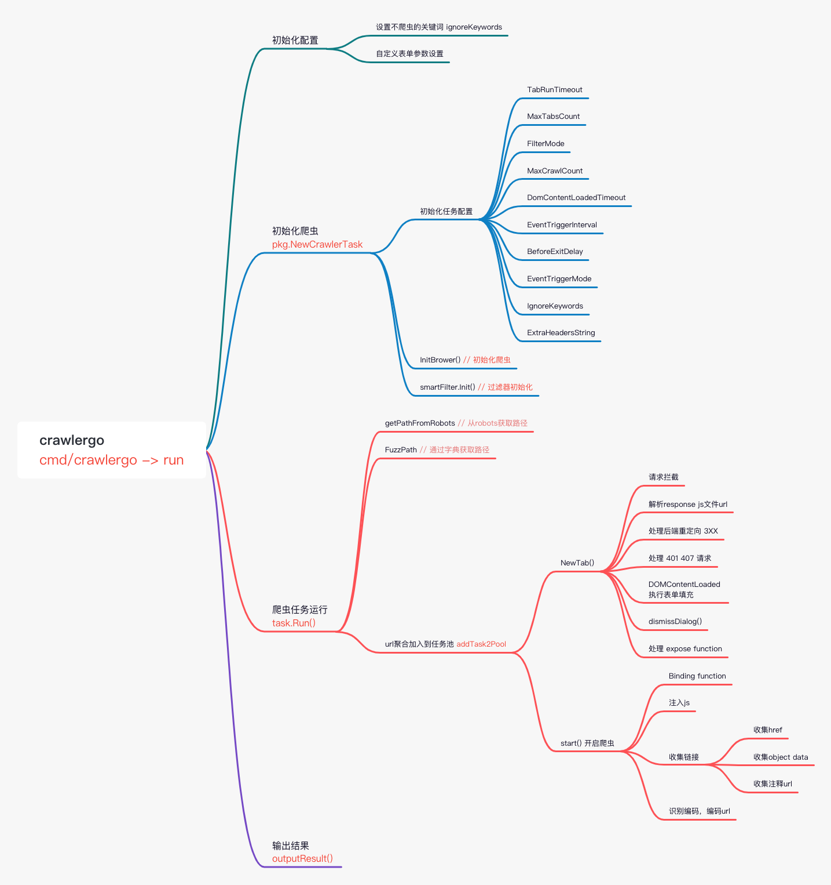
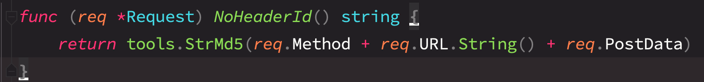
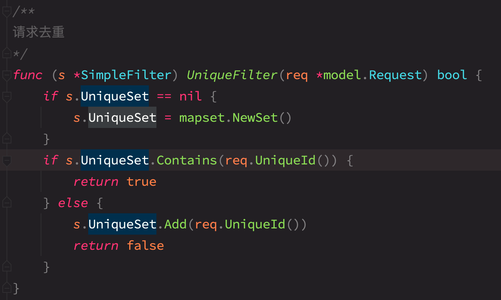
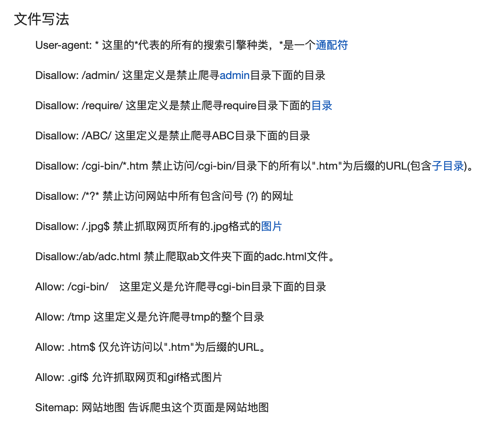
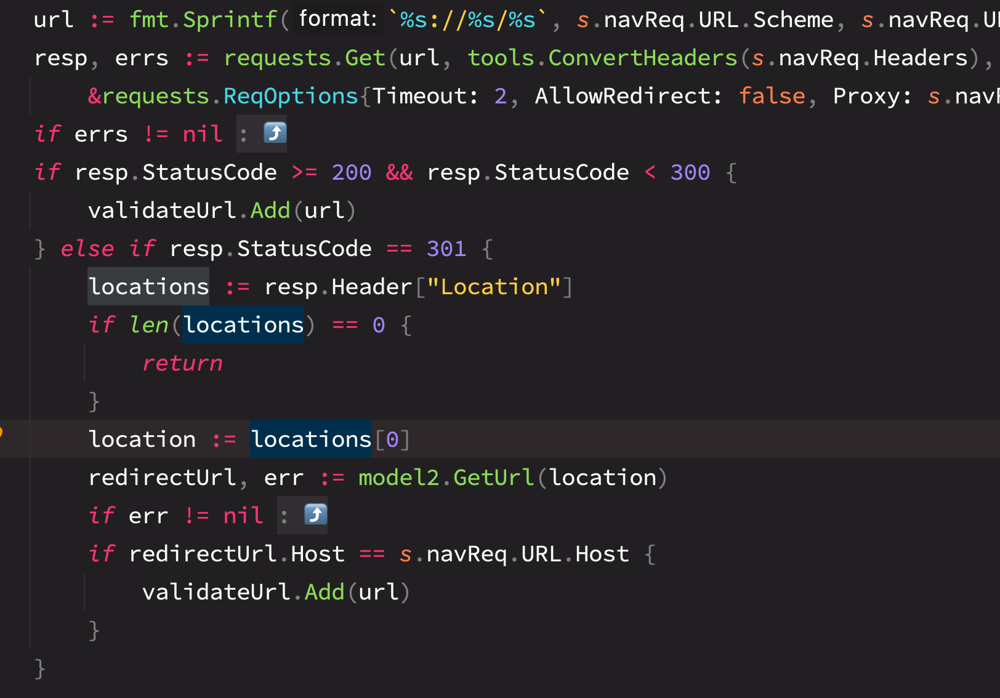
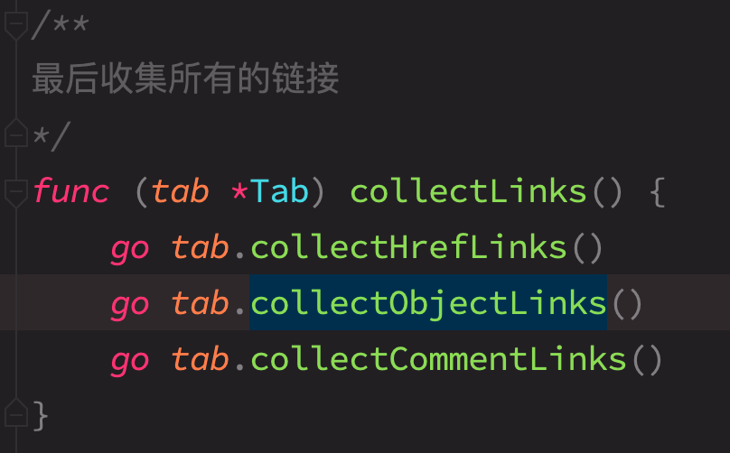
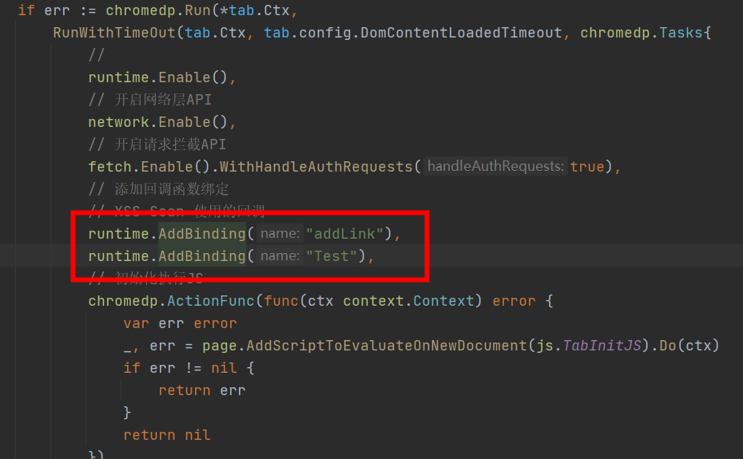
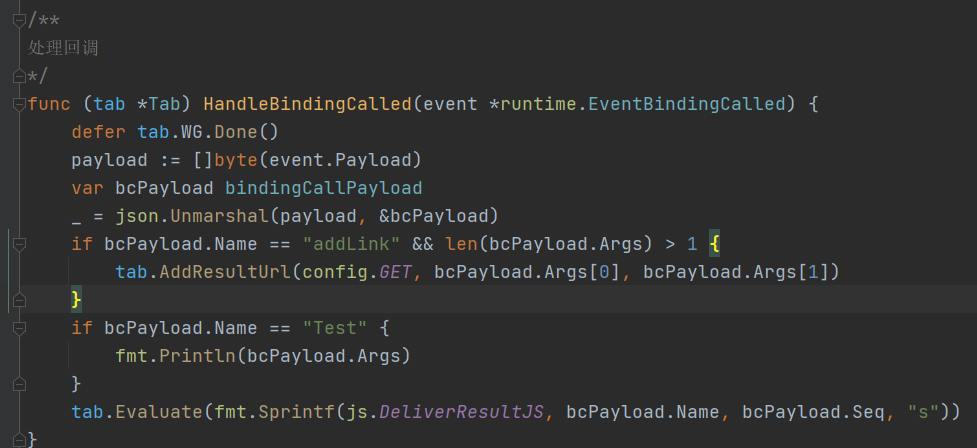
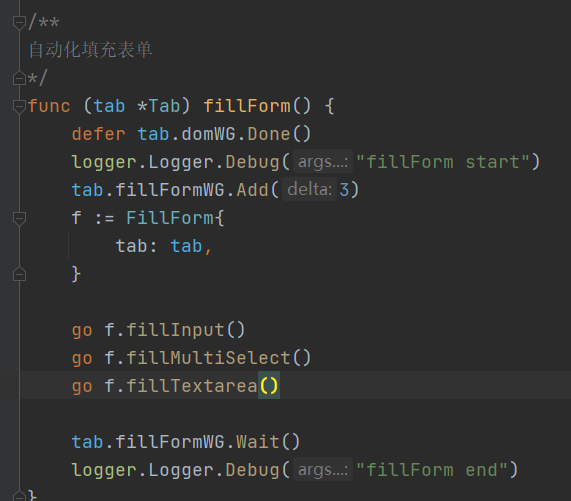
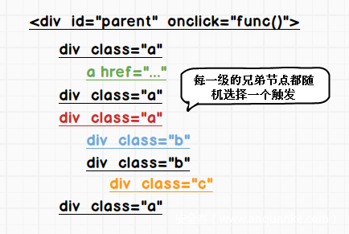

crawlergo是一个使用
chrome headless模式进行URL收集的浏览器爬虫。它对整个网页的关键位置与DOM渲染阶段进行HOOK，自动进行表单填充并提交，配合智能的JS事件触发，尽可能的收集网站暴露出的入口。内置URL去重模块，过滤掉了大量伪静态URL，对于大型网站仍保持较快的解析与抓取速度，最后得到高质量的请求结果集合。crawlergo 目前支持以下特性：
原生浏览器环境，协程池调度任务
表单智能填充、自动化提交
完整DOM事件收集，自动化触发
智能URL去重，去掉大部分的重复请求
全面分析收集，包括javascript文件内容、页面注释、robots.txt文件和常见路径Fuzz
支持Host绑定，自动添加Referer
支持请求代理，支持爬虫结果主动推送
Github: https://github.com/Qianlitp/crawlergo
作者开源了源码，我是很兴奋的，以前也有写一个的想法，但是开源的动态爬虫不多，看了其中几个。
调研
- https://github.com/fcavallarin/htcap
- 递归dom搜索引擎
- 发现ajax/fetch/jsonp/websocket请求
- 支持cookie，代理，ua，http auth
- 基于文本相似度的页面重复数据删除引擎
- 根据文本长度 <256
- simhash
- else
- ShinglePrint
- 主要代码是python调用puppeteer，但是核心逻辑在js里
- https://github.com/go-rod/rod
- 一个操作chrome headless的go库
- 它比官方提供的chrome操作库更容易使用
- 有效解决了chrome残留僵尸进程的问题
- https://github.com/lc/gau
- 通过一些通用接口获取url信息
- https://github.com/jaeles-project/gospider
- Web静态爬虫，也提供了一些方法获取更多URL
- https://github.com/chaitin/rad
- rad虽然没有开源，但是它里面使用yaml进行的配置选项很多，通过配置选项可以大致知道它的一些特性。
- 可以手动登陆
- 启用图片
- 显示对爬取url的一些限制
- 不允许的文件后缀
- 不允许的url关键字
- 不允许的域名
- 不允许的url
- 设置下个页面最大点击和事件触发
Crawlergo
之前也想过写一个动态爬虫来对接扫描器，但是动态爬虫有很多细节都需要打磨，一直没时间做，现在有现成的源码参考能省下不少事。
主要看几个点
- 对浏览器 JavaScript环境的hoook
-
dom的触发，表单填充
-
url如何去重
-
url的收集
目录结构
├─cmd
│ └─crawlergo # 程序主入口
├─examples
├─imgs
└─pkg
├─config # 一些配置相关
├─engine # chrome相关程序
├─filter # 去重相关
├─js # 一些注入的js
├─logger # 日志
├─model # url和请求相关的库
└─tools # 一些通用类库
└─requests
根据源码的调用堆栈做了一个程序启动流程图

配置文件
pkg/config/config.go定义了一些默认的配置文件
const (
DefaultUA = "Mozilla/5.0 (Windows NT 6.1; Win64; x64) AppleWebKit/537.36 (KHTML, like Gecko) Chrome/79.0.3945.0 Safari/537.36"
MaxTabsCount = 10
TabRunTimeout = 20 * time.Second
DefaultInputText = "Crawlergo" // 默认输入的文字
FormInputKeyword = "Crawlergo" // form输入的文字，但是代码中没有引用这个变量的
SuspectURLRegex = `(?:"|')(((?:[a-zA-Z]{1,10}://|//)[^"'/]{1,}\.[a-zA-Z]{2,}[^"']{0,})|((?:/|\.\./|\./)[^"'><,;|*()(%%$^/\\\[\]][^"'><,;|()]{1,})|([a-zA-Z0-9_\-/]{1,}/[a-zA-Z0-9_\-/]{1,}\.(?:[a-zA-Z]{1,4}|action)(?:[\?|#][^"|']{0,}|))|([a-zA-Z0-9_\-/]{1,}/[a-zA-Z0-9_\-/]{3,}(?:[\?|#][^"|']{0,}|))|([a-zA-Z0-9_\-]{1,}\.(?:php|asp|aspx|jsp|json|action|html|js|txt|xml)(?:[\?|#][^"|']{0,}|)))(?:"|')` // url获取正则
URLRegex = `((https?|ftp|file):)?//[-A-Za-z0-9+&@#/%?=~_|!:,.;]+[-A-Za-z0-9+&@#/%=~_|]` // url获取正则
AttrURLRegex = ``
DomContentLoadedTimeout = 5 * time.Second
EventTriggerInterval = 100 * time.Millisecond // 单位毫秒
BeforeExitDelay = 1 * time.Second
DefaultEventTriggerMode = EventTriggerAsync
MaxCrawlCount = 200
)
// 请求的来源,记录了每个url的来源，可以根据这些关键词定位到相关的获取代码
const (
FromTarget = "Target" //初始输入的目标
FromNavigation = "Navigation" //页面导航请求
FromXHR = "XHR" //ajax异步请求
FromDOM = "DOM" //dom解析出来的请求
FromJSFile = "JavaScript" //JS脚本中解析
FromFuzz = "PathFuzz" //初始path fuzz
FromRobots = "robots.txt" //robots.txt
FromComment = "Comment" //页面中的注释
FromWebSocket = "WebSocket"
FromEventSource = "EventSource"
FromFetch = "Fetch"
FromHistoryAPI = "HistoryAPI"
FromOpenWindow = "OpenWindow"
FromHashChange = "HashChange"
FromStaticRes = "StaticResource"
FromStaticRegex = "StaticRegex"
)
// 静态文件后缀，这些后缀的文件全部阻断读取
var StaticSuffix = []string{
"png", "gif", "jpg", "mp4", "mp3", "mng", "pct", "bmp", "jpeg", "pst", "psp", "ttf",
"tif", "tiff", "ai", "drw", "wma", "ogg", "wav", "ra", "aac", "mid", "au", "aiff",
"dxf", "eps", "ps", "svg", "3gp", "asf", "asx", "avi", "mov", "mpg", "qt", "rm",
"wmv", "m4a", "bin", "xls", "xlsx", "ppt", "pptx", "doc", "docx", "odt", "ods", "odg",
"odp", "exe", "zip", "rar", "tar", "gz", "iso", "rss", "pdf", "txt", "dll", "ico",
"gz2", "apk", "crt", "woff", "map", "woff2", "webp", "less", "dmg", "bz2", "otf", "swf",
"flv", "mpeg", "dat", "xsl", "csv", "cab", "exif", "wps", "m4v", "rmvb",
}
// 动态文件的后缀，过滤器用于过滤伪静态用
var ScriptSuffix = []string{
"php", "asp", "jsp", "asa",
}
// 默认不爬的url关键词
var DefaultIgnoreKeywords = []string{"logout", "quit", "exit"}
// 填充表单相关，这些是模糊匹配，匹配到了则使用对应的规则
var AllowedFormName = []string{"default", "mail", "code", "phone", "username", "password", "qq", "id_card", "url", "date", "number"}
var InputTextMap = map[string]map[string]interface{}{
"mail": {
"keyword": []string{"mail"},
"value": "crawlergo@gmail.com",
},
"code": {
"keyword": []string{"yanzhengma", "code", "ver", "captcha"},
"value": "123a",
},
"phone": {
"keyword": []string{"phone", "number", "tel", "shouji"},
"value": "18812345678",
},
"username": {
"keyword": []string{"name", "user", "id", "login", "account"},
"value": "crawlergo@gmail.com",
},
"password": {
"keyword": []string{"pass", "pwd"},
"value": "Crawlergo6.",
},
"qq": {
"keyword": []string{"qq", "wechat", "tencent", "weixin"},
"value": "123456789",
},
"IDCard": {
"keyword": []string{"card", "shenfen"},
"value": "511702197409284963",
},
"url": {
"keyword": []string{"url", "site", "web", "blog", "link"},
"value": "https://crawlergo.nice.cn/",
},
"date": {
"keyword": []string{"date", "time", "year", "now"},
"value": "2018-01-01",
},
"number": {
"keyword": []string{"day", "age", "num", "count"},
"value": "10",
},
}
URL过滤方式
crawlergo有两种过滤，氛围simple和smart。
simple
simple过滤方式比较简单，就是将计算请求体的method、url、postdata 结合计算md5

判断是否存在

smart
smart过滤会对每个请求的参数name，参数value，path 进行标记,会标记成以下字段
const (
CustomValueMark = "{{Crawlergo}}"
FixParamRepeatMark = "{{fix_param}}"
FixPathMark = "{{fix_path}}"
TooLongMark = "{{long}}"
NumberMark = "{{number}}"
ChineseMark = "{{chinese}}"
UpperMark = "{{upper}}"
LowerMark = "{{lower}}"
UrlEncodeMark = "{{urlencode}}"
UnicodeMark = "{{unicode}}"
BoolMark = "{{bool}}"
ListMark = "{{list}}"
TimeMark = "{{time}}"
MixAlphaNumMark = "{{mix_alpha_num}}"
MixSymbolMark = "{{mix_symbol}}"
MixNumMark = "{{mix_num}}"
NoLowerAlphaMark = "{{no_lower}}"
MixStringMark = "{{mix_str}}"
)
例如
?m=home&c=index&a=index
?type=202cb962ac59075b964b07152d234b70
?id=1
?msg=%E6%B6%88%E6%81%AF
处理结果即
?m=home&c=index&a=index
?type={hash}
?id={int}
?msg={urlencode}
会对超过阈值的结果，以及计算的唯一id进行比对，来判断是否过滤，总体来说是基于url的过滤方式。
使用的正则
var chineseRegex = regexp.MustCompile("[\u4e00-\u9fa5]+")
var urlencodeRegex = regexp.MustCompile("(?:%[A-Fa-f0-9]{2,6})+")
var unicodeRegex = regexp.MustCompile(`(?:\\u\w{4})+`)
var onlyAlphaRegex = regexp.MustCompile("^[a-zA-Z]+$")
var onlyAlphaUpperRegex = regexp.MustCompile("^[A-Z]+$")
var alphaUpperRegex = regexp.MustCompile("[A-Z]+")
var alphaLowerRegex = regexp.MustCompile("[a-z]+")
var replaceNumRegex = regexp.MustCompile(`[0-9]+\.[0-9]+|\d+`)
var onlyNumberRegex = regexp.MustCompile(`^[0-9]+$`)
var numberRegex = regexp.MustCompile(`[0-9]+`)
var OneNumberRegex = regexp.MustCompile(`[0-9]`)
var numSymbolRegex = regexp.MustCompile(`\.|_|-`)
var timeSymbolRegex = regexp.MustCompile(`-|:|\s`)
var onlyAlphaNumRegex = regexp.MustCompile(`^[0-9a-zA-Z]+$`)
var markedStringRegex = regexp.MustCompile(`^{{.+}}$`)
var htmlReplaceRegex = regexp.MustCompile(`\.shtml|\.html|\.htm`)
对路径的处理
/**
标记路径
*/
func (s *SmartFilter) MarkPath(path string) string {
pathParts := strings.Split(path, "/")
for index, part := range pathParts {
if len(part) >= 32 {
pathParts[index] = TooLongMark
} else if onlyNumberRegex.MatchString(numSymbolRegex.ReplaceAllString(part, "")) {
pathParts[index] = NumberMark
} else if strings.HasSuffix(part, ".html") || strings.HasSuffix(part, ".htm") || strings.HasSuffix(part, ".shtml") {
part = htmlReplaceRegex.ReplaceAllString(part, "")
// 大写、小写、数字混合
if numberRegex.MatchString(part) && alphaUpperRegex.MatchString(part) && alphaLowerRegex.MatchString(part) {
pathParts[index] = MixAlphaNumMark
// 纯数字
} else if b := numSymbolRegex.ReplaceAllString(part, ""); onlyNumberRegex.MatchString(b) {
pathParts[index] = NumberMark
}
// 含有特殊符号
} else if s.hasSpecialSymbol(part) {
pathParts[index] = MixSymbolMark
} else if chineseRegex.MatchString(part) {
pathParts[index] = ChineseMark
} else if unicodeRegex.MatchString(part) {
pathParts[index] = UnicodeMark
} else if onlyAlphaUpperRegex.MatchString(part) {
pathParts[index] = UpperMark
// 均为数字和一些符号组成
} else if b := numSymbolRegex.ReplaceAllString(part, ""); onlyNumberRegex.MatchString(b) {
pathParts[index] = NumberMark
// 数字出现的次数超过3，视为伪静态path
} else if b := OneNumberRegex.ReplaceAllString(part, "0"); strings.Count(b, "0") > 3 {
pathParts[index] = MixNumMark
}
}
newPath := strings.Join(pathParts, "/")
return newPath
}
基于网页结构去重
作者原帖中的基于网页结构去重写的非常精彩 https://www.anquanke.com/post/id/178339#h2-17
参考的论文下载: https://patents.google.com/patent/CN101694668B/zh
作者的将网页特征向量抽离出来，索引存储，用来判断大量网页的相似度，非常惊艳，未来用到资产收集系统或者网络空间引擎上也都是非常不错的选择。
URL收集
robots
在爬虫之前，会先请求robots.txt，解析出所有链接，加入到待爬取页面。
源码中使用了一个正则来匹配
var urlFindRegex = regexp.MustCompile(`(?:Disallow|Allow):.*?(/.+)`)
看了下robots规范:https://baike.baidu.com/item/robots%E5%8D%8F%E8%AE%AE/2483797 ，应该还可以再优化一下，来处理一些表达式。

DIR FUZZ
在爬虫之前，如果没有指定dir字典的话，默认会使用内置的字典
['11', '123', '2017', '2018', 'message', 'mis', 'model', 'abstract', 'account', 'act', 'action', 'activity', 'ad', 'address', 'ajax', 'alarm', 'api', 'app', 'ar', 'attachment', 'auth', 'authority', 'award', 'back', 'backup', 'bak', 'base', 'bbs', 'bbs1', 'cms', 'bd', 'gallery', 'game', 'gift', 'gold', 'bg', 'bin', 'blacklist', 'blog', 'bootstrap', 'brand', 'build', 'cache', 'caches', 'caching', 'cacti', 'cake', 'captcha', 'category', 'cdn', 'ch', 'check', 'city', 'class', 'classes', 'classic', 'client', 'cluster', 'collection', 'comment', 'commit', 'common', 'commons', 'components', 'conf', 'config', 'mysite', 'confs', 'console', 'consumer', 'content', 'control', 'controllers', 'core', 'crontab', 'crud', 'css', 'daily', 'dashboard', 'data', 'database', 'db', 'default', 'demo', 'dev', 'doc', 'download', 'duty', 'es', 'eva', 'examples', 'excel', 'export', 'ext', 'fe', 'feature', 'file', 'files', 'finance', 'flashchart', 'follow', 'forum', 'frame', 'framework', 'ft', 'group', 'gss', 'hello', 'helper', 'helpers', 'history', 'home', 'hr', 'htdocs', 'html', 'hunter', 'image', 'img11', 'import', 'improve', 'inc', 'include', 'includes', 'index', 'info', 'install', 'interface', 'item', 'jobconsume', 'jobs', 'json', 'kindeditor', 'l', 'languages', 'lib', 'libraries', 'libs', 'link', 'lite', 'local', 'log', 'login', 'logs', 'mail', 'main', 'maintenance', 'manage', 'manager', 'manufacturer', 'menus', 'models', 'modules', 'monitor', 'movie', 'mysql', 'n', 'nav', 'network', 'news', 'notice', 'nw', 'oauth', 'other', 'page', 'pages', 'passport', 'pay', 'pcheck', 'people', 'person', 'php', 'phprpc', 'phptest', 'picture', 'pl', 'platform', 'pm', 'portal', 'post', 'product', 'project', 'protected', 'proxy', 'ps', 'public', 'qq', 'question', 'quote', 'redirect', 'redisclient', 'report', 'resource', 'resources', 's', 'save', 'schedule', 'schema', 'script', 'scripts', 'search', 'security', 'server', 'service', 'shell', 'show', 'simple', 'site', 'sites', 'skin', 'sms', 'soap', 'sola', 'sort', 'spider', 'sql', 'stat', 'static', 'statistics', 'stats', 'submit', 'subways', 'survey', 'sv', 'syslog', 'system', 'tag', 'task', 'tasks', 'tcpdf', 'template', 'templates', 'test', 'tests', 'ticket', 'tmp', 'token', 'tool', 'tools', 'top', 'tpl', 'txt', 'upload', 'uploadify', 'uploads', 'url', 'user', 'util', 'v1', 'v2', 'vendor', 'view', 'views', 'web', 'weixin', 'widgets', 'wm', 'wordpress', 'workspace', 'ws', 'www', 'www2', 'wwwroot', 'zone', 'admin', 'admin_bak', 'mobile', 'm', 'js']
根据状态码判断

爬虫时的url收集
-
解析流量中的url
-
获取xmr类型的请求
-
正则解析js、html、json中url
-
收集当前页面上的url信息
"src", "href", "data-url", "data-href" object[data] 注释中的url 
-
对浏览器环境的hook
在chrome的tab初始化时，会执行一段js代码，hook部分函数和事件来控制js的运行环境。
同时定义了一个js全局函数addLink、Test，通过这个函数可以与go进行交互。

调用go函数
js初始化时对这个函数重新包装
const binding = window["addLink"];
window["addLink"] = async(...args) => {
const me = window["addLink"];
let callbacks = me['callbacks'];
if (!callbacks) {
callbacks = new Map();
me['callbacks'] = callbacks;
}
const seq = (me['lastSeq'] || 0) + 1;
me['lastSeq'] = seq;
const promise = new Promise(fulfill => callbacks.set(seq, fulfill));
binding(JSON.stringify({name: "addLink", seq, args}));
return promise;
};
const bindingTest = window["Test"];
window["Test"] = async(...args) => {
const me = window["Test"];
let callbacks = me['callbacks'];
if (!callbacks) {
callbacks = new Map();
me['callbacks'] = callbacks;
}
const seq = (me['lastSeq'] || 0) + 1;
me['lastSeq'] = seq;
const promise = new Promise(fulfill => callbacks.set(seq, fulfill));
binding(JSON.stringify({name: "Test", seq, args}));
return promise;
};
go处理逻辑

执行完go函数后会再执行一段js
const DeliverResultJS = `
(function deliverResult(name, seq, result) {
window[name]['callbacks'].get(seq)(result);
window[name]['callbacks'].delete(seq);
})("%s", %v, "%s")
但是没看懂使用promise后回调调用的意义是什么。。
Bypass headless detect
// Pass the Webdriver Test.
Object.defineProperty(navigator, 'webdriver', {
get: () => false,
});
// Pass the Plugins Length Test.
// Overwrite the plugins property to use a custom getter.
Object.defineProperty(navigator, 'plugins', {
// This just needs to have length > 0 for the current test,
// but we could mock the plugins too if necessary.
get: () => [1, 2, 3, 4, 5],
});
// Pass the Chrome Test.
// We can mock this in as much depth as we need for the test.
window.chrome = {
runtime: {},
};
// Pass the Permissions Test.
const originalQuery = window.navigator.permissions.query;
window.navigator.permissions.query = (parameters) => (
parameters.name === 'notifications' ?
Promise.resolve({ state: Notification.permission }) :
originalQuery(parameters)
);
//Pass the Permissions Test. navigator.userAgent
Object.defineProperty(navigator, 'userAgent', {
get: () => "Mozilla/5.0 (Windows NT 6.1; Win64; x64) AppleWebKit/537.36 (KHTML, like Gecko) Chrome/79.0.3945.0 Safari/537.36",
});
// 修改浏览器对象的属性
Object.defineProperty(navigator, 'platform', {
get: function () { return 'win32'; }
});
Object.defineProperty(navigator, 'language', {
get: function () { return 'zh-CN'; }
});
Object.defineProperty(navigator, 'languages', {
get: function () { return ["zh-CN", "zh"]; }
});
记录url以及对前端框架的适配
// history api hook 许多前端框架都采用此API进行页面路由，记录url并取消操作
window.history.pushState = function(a, b, c) {
window.addLink(c, "HistoryAPI");
}
window.history.replaceState = function(a, b, c) {
window.addLink(c, "HistoryAPI");
}
Object.defineProperty(window.history,"pushState",{"writable": false, "configurable": false});
Object.defineProperty(window.history,"replaceState",{"writable": false, "configurable": false});
// 监听hash改变 Vue等框架默认使用hash部分进行前端页面路由
window.addEventListener("hashchange", function() {
window.addLink(document.location.href, "HashChange");
});
// 监听窗口的打开和关闭，记录新窗口打开的url，并取消实际操作
// hook window.open
window.open = function (url) {
console.log("trying to open window.");
window.addLink(url, "OpenWindow");
}
Object.defineProperty(window,"open",{"writable": false, "configurable": false});
// hook window close
window.close = function() {console.log("trying to close page.");};
Object.defineProperty(window,"close",{"writable": false, "configurable": false});
// hook window.WebSocket 、window.EventSource 、 window.fetch 等函数
var oldWebSocket = window.WebSocket;
window.WebSocket = function(url, arg) {
window.addLink(url, "WebSocket");
return new oldWebSocket(url, arg);
}
var oldEventSource = window.EventSource;
window.EventSource = function(url) {
window.addLink(url, "EventSource");
return new oldEventSource(url);
}
var oldFetch = window.fetch;
window.fetch = function(url) {
window.addLink(url, "Fetch");
return oldFetch(url);
}
hook setTimeout/SetInterval
// hook setTimeout
//window.__originalSetTimeout = window.setTimeout;
//window.setTimeout = function() {
// arguments[1] = 0;
// return window.__originalSetTimeout.apply(this, arguments);
//};
//Object.defineProperty(window,"setTimeout",{"writable": false, "configurable": false});
// hook setInterval 时间设置为60秒 目的是减轻chrome的压力
window.__originalSetInterval = window.setInterval;
window.setInterval = function() {
arguments[1] = 60000;
return window.__originalSetInterval.apply(this, arguments);
};
Object.defineProperty(window,"setInterval",{"writable": false, "configurable": false});
这个hook操作没有明白，将setInterval强制设为了60s，我想应该来个判断，大于60s时再统一设置，60s，这样爬虫效率就变得太低了。
setTimeout取消了hook，毕竟只执行一次，可能不是很重要。
hook ajax
hook 原生ajax并限制最大请求数，可能是怕自动点击造成ajax爆炸
// 劫持原生ajax，并对每个请求设置最大请求次数
window.ajax_req_count_sec_auto = {};
XMLHttpRequest.prototype.__originalOpen = XMLHttpRequest.prototype.open;
XMLHttpRequest.prototype.open = function(method, url, async, user, password) {
// hook code
this.url = url;
this.method = method;
let name = method + url;
if (!window.ajax_req_count_sec_auto.hasOwnProperty(name)) {
window.ajax_req_count_sec_auto[name] = 1
} else {
window.ajax_req_count_sec_auto[name] += 1
}
if (window.ajax_req_count_sec_auto[name] <= 10) {
return this.__originalOpen(method, url, true, user, password);
}
}
Object.defineProperty(XMLHttpRequest.prototype,"open",{"writable": false, "configurable": false});
XMLHttpRequest.prototype.__originalSend = XMLHttpRequest.prototype.send;
XMLHttpRequest.prototype.send = function(data) {
// hook code
let name = this.method + this.url;
if (window.ajax_req_count_sec_auto[name] <= 10) {
return this.__originalSend(data);
}
}
Object.defineProperty(XMLHttpRequest.prototype,"send",{"writable": false, "configurable": false});
XMLHttpRequest.prototype.__originalAbort = XMLHttpRequest.prototype.abort;
XMLHttpRequest.prototype.abort = function() {
// hook code
}
Object.defineProperty(XMLHttpRequest.prototype,"abort",{"writable": false, "configurable": false});
锁定表单重置
爬虫在处理网页时，会先填充表单，接着触发事件去提交表单，但有时会意外点击到表单的重置按钮，造成内容清空，表单提交失败。所以为了防止这种情况的发生，需要Hook表单的重置并锁定不能修改。
// 锁定表单重置
HTMLFormElement.prototype.reset = function() {console.log("cancel reset form")};
Object.defineProperty(HTMLFormElement.prototype,"reset",{"writable": false, "configurable": false});
事件Hook
对dom0级和dom2级事件分别hook，用一个数组设定最大触发次数，所有js调用的事件，会对每个标签设置一个sec_auto_dom2_event_flag属性，方便后面寻找并自动触发。
// hook dom2 级事件监听
window.add_even_listener_count_sec_auto = {};
// record event func , hook addEventListener
let old_event_handle = Element.prototype.addEventListener;
Element.prototype.addEventListener = function(event_name, event_func, useCapture) {
let name = "<" + this.tagName + "> " + this.id + this.name + this.getAttribute("class") + "|" + event_name;
// console.log(name)
// 对每个事件设定最大的添加次数，防止无限触发，最大次数为5
if (!window.add_even_listener_count_sec_auto.hasOwnProperty(name)) {
window.add_even_listener_count_sec_auto[name] = 1;
} else if (window.add_even_listener_count_sec_auto[name] == 5) {
return ;
} else {
window.add_even_listener_count_sec_auto[name] += 1;
}
if (this.hasAttribute("sec_auto_dom2_event_flag")) {
let sec_auto_dom2_event_flag = this.getAttribute("sec_auto_dom2_event_flag");
this.setAttribute("sec_auto_dom2_event_flag", sec_auto_dom2_event_flag + "|" + event_name);
} else {
this.setAttribute("sec_auto_dom2_event_flag", event_name);
}
old_event_handle.apply(this, arguments);
};
function dom0_listener_hook(that, event_name) {
let name = "<" + that.tagName + "> " + that.id + that.name + that.getAttribute("class") + "|" + event_name;
// console.log(name);
// 对每个事件设定最大的添加次数，防止无限触发，最大次数为5
if (!window.add_even_listener_count_sec_auto.hasOwnProperty(name)) {
window.add_even_listener_count_sec_auto[name] = 1;
} else if (window.add_even_listener_count_sec_auto[name] == 5) {
return ;
} else {
window.add_even_listener_count_sec_auto[name] += 1;
}
if (that.hasAttribute("sec_auto_dom2_event_flag")) {
let sec_auto_dom2_event_flag = that.getAttribute("sec_auto_dom2_event_flag");
that.setAttribute("sec_auto_dom2_event_flag", sec_auto_dom2_event_flag + "|" + event_name);
} else {
that.setAttribute("sec_auto_dom2_event_flag", event_name);
}
}
// hook dom0 级事件监听
Object.defineProperties(HTMLElement.prototype, {
onclick: {set: function(newValue){onclick = newValue;dom0_listener_hook(this, "click");}},
onchange: {set: function(newValue){onchange = newValue;dom0_listener_hook(this, "change");}},
onblur: {set: function(newValue){onblur = newValue;dom0_listener_hook(this, "blur");}},
ondblclick: {set: function(newValue){ondblclick = newValue;dom0_listener_hook(this, "dbclick");}},
onfocus: {set: function(newValue){onfocus = newValue;dom0_listener_hook(this, "focus");}},
onkeydown: {set: function(newValue){onkeydown = newValue;dom0_listener_hook(this, "keydown");}},
onkeypress: {set: function(newValue){onkeypress = newValue;dom0_listener_hook(this, "keypress");}},
onkeyup: {set: function(newValue){onkeyup = newValue;dom0_listener_hook(this, "keyup");}},
onload: {set: function(newValue){onload = newValue;dom0_listener_hook(this, "load");}},
onmousedown: {set: function(newValue){onmousedown = newValue;dom0_listener_hook(this, "mousedown");}},
onmousemove: {set: function(newValue){onmousemove = newValue;dom0_listener_hook(this, "mousemove");}},
onmouseout: {set: function(newValue){onmouseout = newValue;dom0_listener_hook(this, "mouseout");}},
onmouseover: {set: function(newValue){onmouseover = newValue;dom0_listener_hook(this, "mouseover");}},
onmouseup: {set: function(newValue){onmouseup = newValue;dom0_listener_hook(this, "mouseup");}},
onreset: {set: function(newValue){onreset = newValue;dom0_listener_hook(this, "reset");}},
onresize: {set: function(newValue){onresize = newValue;dom0_listener_hook(this, "resize");}},
onselect: {set: function(newValue){onselect = newValue;dom0_listener_hook(this, "select");}},
onsubmit: {set: function(newValue){onsubmit = newValue;dom0_listener_hook(this, "submit");}},
onunload: {set: function(newValue){onunload = newValue;dom0_listener_hook(this, "unload");}},
onabort: {set: function(newValue){onabort = newValue;dom0_listener_hook(this, "abort");}},
onerror: {set: function(newValue){onerror = newValue;dom0_listener_hook(this, "error");}},
})
表单填充,事件触发
表单填充

input处理
// 找出 type 为空 或者 type=text
for _, node := range nodes {
// 兜底超时
tCtxN, cancelN := context.WithTimeout(ctx, time.Second*5)
attrType := node.AttributeValue("type")
if attrType == "text" || attrType == "" {
inputName := node.AttributeValue("id") + node.AttributeValue("class") + node.AttributeValue("name")
value := f.GetMatchInputText(inputName)
// 寻找匹配类型的值
var nodeIds = []cdp.NodeID{node.NodeID}
// 先使用模拟输入
_ = chromedp.SendKeys(nodeIds, value, chromedp.ByNodeID).Do(tCtxN)
// 再直接赋值JS属性
_ = chromedp.SetAttributeValue(nodeIds, "value", value, chromedp.ByNodeID).Do(tCtxN)
} else if attrType == "email" || attrType == "password" || attrType == "tel" {
value := f.GetMatchInputText(attrType)
// 寻找匹配类型的值
var nodeIds = []cdp.NodeID{node.NodeID}
// 先使用模拟输入
_ = chromedp.SendKeys(nodeIds, value, chromedp.ByNodeID).Do(tCtxN)
// 再直接赋值JS属性
_ = chromedp.SetAttributeValue(nodeIds, "value", value, chromedp.ByNodeID).Do(tCtxN)
} else if attrType == "radio" || attrType == "checkbox" {
var nodeIds = []cdp.NodeID{node.NodeID}
_ = chromedp.SetAttributeValue(nodeIds, "checked", "true", chromedp.ByNodeID).Do(tCtxN)
} else if attrType == "file" || attrType == "image" {
var nodeIds = []cdp.NodeID{node.NodeID}
wd, _ := os.Getwd()
filePath := wd + "/upload/image.png"
_ = chromedp.RemoveAttribute(nodeIds, "accept", chromedp.ByNodeID).Do(tCtxN)
_ = chromedp.RemoveAttribute(nodeIds, "required", chromedp.ByNodeID).Do(tCtxN)
// 对于一些简单的限制，可以去掉，比如找到文件上传的dom节点并删除 accept 和 required 属性：
_ = chromedp.SendKeys(nodeIds, filePath, chromedp.ByNodeID).Do(tCtxN)
}
cancelN()
}
multiSelect
css语法获取select第一个元素，设置属性即可
optionNodes, optionErr := f.tab.GetNodeIDs(`select option:first-child`)
if optionErr != nil || len(optionNodes) == 0 {
logger.Logger.Debug("fillMultiSelect: get select option element err")
if optionErr != nil {
logger.Logger.Debug(optionErr)
}
return
}
_ = chromedp.SetAttributeValue(optionNodes, "selected", "true", chromedp.ByNodeID).Do(tCtx)
_ = chromedp.SetJavascriptAttribute(optionNodes, "selected", "true", chromedp.ByNodeID).Do(tCtx)
TextArea
找到后填充即可
textareaNodes, textareaErr := f.tab.GetNodeIDs(`textarea`)
if textareaErr != nil || len(textareaNodes) == 0 {
logger.Logger.Debug("fillTextarea: get textarea element err")
if textareaErr != nil {
logger.Logger.Debug(textareaErr)
}
return
}
_ = chromedp.SendKeys(textareaNodes, value, chromedp.ByNodeID).Do(tCtx)
自动化提交表单
提交表单也有一些需要注意的问题，直接点击form表单的提交按钮会导致页面重载，我们并不希望当前页面刷新，所以除了Hook住前端导航请求之外，我们还可以为form节点设置target属性，指向一个隐藏的iframe。具体操作的话就是新建隐藏iframe然后将form表单的target指向它即可
/**
设置form的target指向一个frame
*/
const NewFrameTemplate = `
(function sec_auto_new_iframe () {
let frame = document.createElement("iframe");
frame.setAttribute("name", "%s");
frame.setAttribute("id", "%s");
frame.setAttribute("style", "display: none");
document.body.appendChild(frame);
})()
`
func (tab *Tab) setFormToFrame() {
// 首先新建 frame
nameStr := tools.RandSeq(8)
tab.Evaluate(fmt.Sprintf(js.NewFrameTemplate, nameStr, nameStr))
// 接下来将所有的 form 节点target都指向它
ctx := tab.GetExecutor()
formNodes, formErr := tab.GetNodeIDs(`form`)
if formErr != nil || len(formNodes) == 0 {
logger.Logger.Debug("setFormToFrame: get form element err")
if formErr != nil {
logger.Logger.Debug(formErr)
}
return
}
tCtx, cancel := context.WithTimeout(ctx, time.Second*2)
defer cancel()
_ = chromedp.SetAttributeValue(formNodes, "target", nameStr, chromedp.ByNodeID).Do(tCtx)
}
要成功的提交表单，就得正确触发表单的submit操作。不是所有的前端内容都有规范的表单格式，或许有一些form连个button都没有，所以这里有三种思路可供尝试，保险起见建议全部都运行一次：
- 在form节点的子节点内寻找
type=submit的节点，执行elementHandle.click()方法。 - 直接对form节点执行JS语句：
form.submit()，注意，如果form内有包含属性值name=submit的节点，将会抛出异常，所以注意捕获异常。 - 在form节点的子节点内寻找所有button节点，全部执行一次
elementHandle.click()方法。因为我们之前已经重定义并锁定了表单重置函数，所以不用担心会清空表单。
这样，绝大部分表单我们都能触发了。
/**
点击按钮 type=submit
*/
func (tab *Tab) clickSubmit() {
defer tab.formSubmitWG.Done()
// 首先点击按钮 type=submit
ctx := tab.GetExecutor()
// 获取所有的form节点 直接执行submit
formNodes, formErr := tab.GetNodeIDs(`form`)
if formErr != nil || len(formNodes) == 0 {
logger.Logger.Debug("clickSubmit: get form element err")
if formErr != nil {
logger.Logger.Debug(formErr)
}
return
}
tCtx1, cancel1 := context.WithTimeout(ctx, time.Second*2)
defer cancel1()
_ = chromedp.Submit(formNodes, chromedp.ByNodeID).Do(tCtx1)
// 获取所有的input标签
inputNodes, inputErr := tab.GetNodeIDs(`form input[type=submit]`)
if inputErr != nil || len(inputNodes) == 0 {
logger.Logger.Debug("clickSubmit: get form input element err")
if inputErr != nil {
logger.Logger.Debug(inputErr)
}
return
}
tCtx2, cancel2 := context.WithTimeout(ctx, time.Second*2)
defer cancel2()
_ = chromedp.Click(inputNodes, chromedp.ByNodeID).Do(tCtx2)
}
/**
click all button
*/
func (tab *Tab) clickAllButton() {
defer tab.formSubmitWG.Done()
// 获取所有的form中的button节点
ctx := tab.GetExecutor()
// 获取所有的button标签
btnNodeIDs, bErr := tab.GetNodeIDs(`form button`)
if bErr != nil || len(btnNodeIDs) == 0 {
logger.Logger.Debug("clickAllButton: get form button element err")
if bErr != nil {
logger.Logger.Debug(bErr)
}
return
}
tCtx, cancel1 := context.WithTimeout(ctx, time.Second*2)
defer cancel1()
_ = chromedp.Click(btnNodeIDs, chromedp.ByNodeID).Do(tCtx)
// 使用JS的click方法进行点击
var btnNodes []*cdp.Node
tCtx2, cancel2 := context.WithTimeout(ctx, time.Second*2)
defer cancel2()
err := chromedp.Nodes(btnNodeIDs, &btnNodes, chromedp.ByNodeID).Do(tCtx2)
if err != nil {
return
}
for _, node := range btnNodes {
_ = tab.EvaluateWithNode(js.FormNodeClickJS, node)
}
}
事件触发
- 对JavaScript协议的内联事件触发，执行以下js
(async function click_all_a_tag_javascript(){
let nodeListHref = document.querySelectorAll("[href]");
nodeListHref = window.randArr(nodeListHref);
for (let node of nodeListHref) {
let attrValue = node.getAttribute("href");
if (attrValue.toLocaleLowerCase().startsWith("javascript:")) {
await window.sleep(%f);
try {
eval(attrValue.substring(11));
}
catch {}
}
}
let nodeListSrc = document.querySelectorAll("[src]");
nodeListSrc = window.randArr(nodeListSrc);
for (let node of nodeListSrc) {
let attrValue = node.getAttribute("src");
if (attrValue.toLocaleLowerCase().startsWith("javascript:")) {
await window.sleep(%f);
try {
eval(attrValue.substring(11));
}
catch {}
}
}
})()
- 对常见的内联事件触发
(async function trigger_all_inline_event(){
let eventNames = ["onabort", "onblur", "onchange", "onclick", "ondblclick", "onerror", "onfocus", "onkeydown", "onkeypress", "onkeyup", "onload", "onmousedown", "onmousemove", "onmouseout", "onmouseover", "onmouseup", "onreset", "onresize", "onselect", "onsubmit", "onunload"];
for (let eventName of eventNames) {
let event = eventName.replace("on", "");
let nodeList = document.querySelectorAll("[" + eventName + "]");
if (nodeList.length > 100) {
nodeList = nodeList.slice(0, 100);
}
nodeList = window.randArr(nodeList);
for (let node of nodeList) {
await window.sleep(%f);
let evt = document.createEvent('CustomEvent');
evt.initCustomEvent(event, false, true, null);
try {
node.dispatchEvent(evt);
}
catch {}
}
}
})()
-
对之前hook的事件触发，对于某些节点，可能会存在子节点也响应的事件，为了性能考虑，可以将层数控制到三层，且对兄弟节点随机选择一个触发。简单画图说明：

(async function trigger_all_dom2_custom_event() {
function transmit_child(node, event, loop) {
let _loop = loop + 1
if (_loop > 4) {
return;
}
if (node.nodeType === 1) {
if (node.hasChildNodes) {
let index = parseInt(Math.random()*node.children.length,10);
try {
node.children[index].dispatchEvent(event);
} catch(e) {}
let max = node.children.length>5?5:node.children.length;
for (let count=0;count<max;count++) {
let index = parseInt(Math.random()*node.children.length,10);
transmit_child(node.children[index], event, _loop);
}
}
}
}
let nodes = document.querySelectorAll("[sec_auto_dom2_event_flag]");
if (nodes.length > 200) {
nodes = nodes.slice(0, 200);
}
nodes = window.randArr(nodes);
for (let node of nodes) {
let loop = 0;
await window.sleep(%f);
let event_name_list = node.getAttribute("sec_auto_dom2_event_flag").split("|");
let event_name_set = new Set(event_name_list);
event_name_list = [...event_name_set];
for (let event_name of event_name_list) {
let evt = document.createEvent('CustomEvent');
evt.initCustomEvent(event_name, true, true, null);
if (event_name == "click" || event_name == "focus" || event_name == "mouseover" || event_name == "select") {
transmit_child(node, evt, loop);
}
if ( (node.className && node.className.includes("close")) || (node.id && node.id.includes("close"))) {
continue;
}
try {
node.dispatchEvent(evt);
} catch(e) {}
}
}
})()
- 监控插入的节点，如果新增节点的href src含有JavaScript协议，则手动触发。这似乎会漏一些内联事件的触发。
(function init_observer_sec_auto_b() {
window.dom_listener_func_sec_auto = function (e) {
let node = e.target;
let nodeListSrc = node.querySelectorAll("[src]");
for (let each of nodeListSrc) {
if (each.src) {
window.addLink(each.src, "DOM");
let attrValue = each.getAttribute("src");
if (attrValue.toLocaleLowerCase().startsWith("javascript:")) {
try {
eval(attrValue.substring(11));
}
catch {}
}
}
}
let nodeListHref = node.querySelectorAll("[href]");
nodeListHref = window.randArr(nodeListHref);
for (let each of nodeListHref) {
if (each.href) {
window.addLink(each.href, "DOM");
let attrValue = each.getAttribute("href");
if (attrValue.toLocaleLowerCase().startsWith("javascript:")) {
try {
eval(attrValue.substring(11));
}
catch {}
}
}
}
};
document.addEventListener('DOMNodeInserted', window.dom_listener_func_sec_auto, true);
document.addEventListener('DOMSubtreeModified', window.dom_listener_func_sec_auto, true);
document.addEventListener('DOMNodeInsertedIntoDocument', window.dom_listener_func_sec_auto, true);
document.addEventListener('DOMAttrModified', window.dom_listener_func_sec_auto, true);
})()
窗口阻塞处理
crawler处理了 alert()/prompt() 基础认证等等的阻塞。
chromedp.ListenTarget(*tab.Ctx, func(v interface{}) {
switch v := v.(type) {
//case *network.EventLoadingFailed:
// logger.Logger.Error("EventLoadingFailed ", v.ErrorText)
// 401 407 要求认证 此时会阻塞当前页面 需要处理解决
case *fetch.EventAuthRequired:
tab.WG.Add(1)
go tab.HandleAuthRequired(v)
// close Dialog
case *page.EventJavascriptDialogOpening:
tab.WG.Add(1)
go tab.dismissDialog()
}
})
但是还有 打印 和 文件上传窗口可能阻塞窗口
打印事件可以hook函数，文件上传窗口可以用Page.setInterceptFileChooserDialog过滤。
End
一些还可以优化的部分，表单填充可以识别参数长度max-length、min-length
从Crawlergo的设计和源码中能提取出很多东西来,
- 基于网页结构的大量网页快速相似匹配，如果能集成到那些网络空间引擎中应该会很好玩，但似乎还没有一家做过。
有了原生的动态爬虫支持，对自动化漏扫也有了更多的想法，例如通过hook一些触发函数，污点检测来检测dom xss，爬虫的原始请求包可以直接推到w13scan中。有了自动化爬虫，后续所有流量都可以存储一份，直接用搜索语法来找到相同参数的页面进行poc测试等等。。
作者的代码风格太不go了，想重写一份了。
参考
- https://www.anquanke.com/post/id/178339#h2-17
- https://xz.aliyun.com/t/7064#toc-11